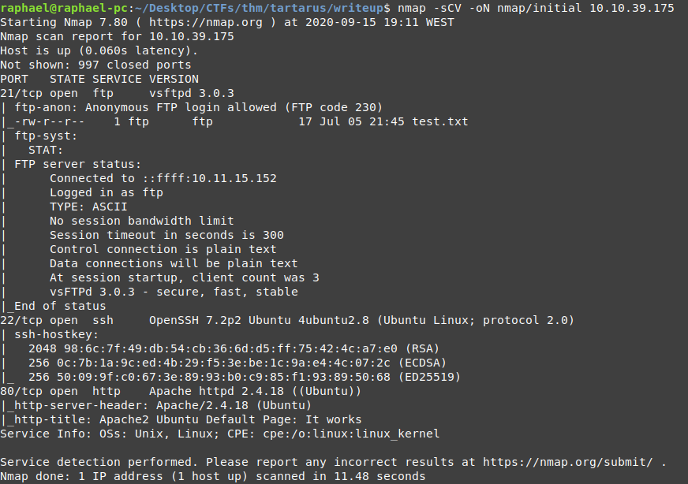
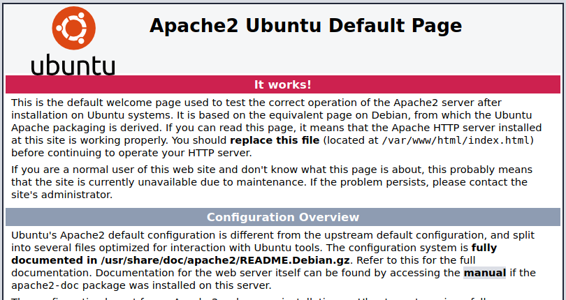
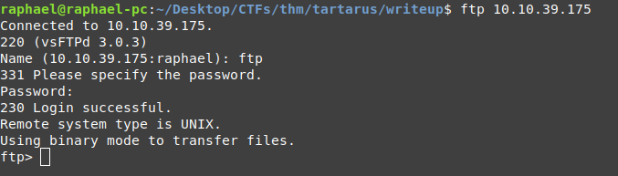
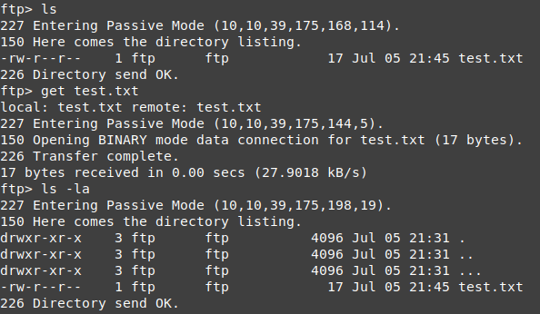
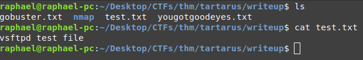
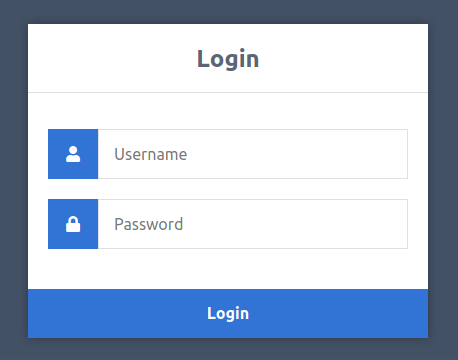

Nmap
As with most rooms, let's start off by running some nmap scans. For starters, I like to run it with the -sC and -sV (same thing as -sCV) flags for running default scripts and enumerating service/version information respectively.
nmap -sCV -oN nmap/initial [IP]
And now lets check the output:
Here we can see there is an FTP server with anonymous login enabled, so that seems like a good place to start checking out right away with some manual enumeration.
We can also see an ssh connection and an apache http server, which is also worth checking out manually.
Web Server
This is just the default apache page, and looking at the source code also does not reveal anything useful, so let's just move on to enumerating FTP.
FTP
As we had already seen from our nmap scan, FTP allows us to login anonymously, this means we can login with username 'anonymous' or 'ftp' and any password we want.
Afterwards we can start listing the contents of the directory.
We can see a file 'test.txt', to see the contents we can download the file with the get command.
get test.txt

Unfortunately, it's just a test file for vsFTPd.
However, if we look closely at the output of the ls -la command I did above, we can see a hidden directory named ..., let's move into it.
Here we could see anothe directory ... and after moving into that one we see a file 'yougotgoodeyes.txt' and the hidden directories stop. So let's get the file and exit ftp.
This seems like a path to something, let's try it on the web server and see if it takes us anywhere.
